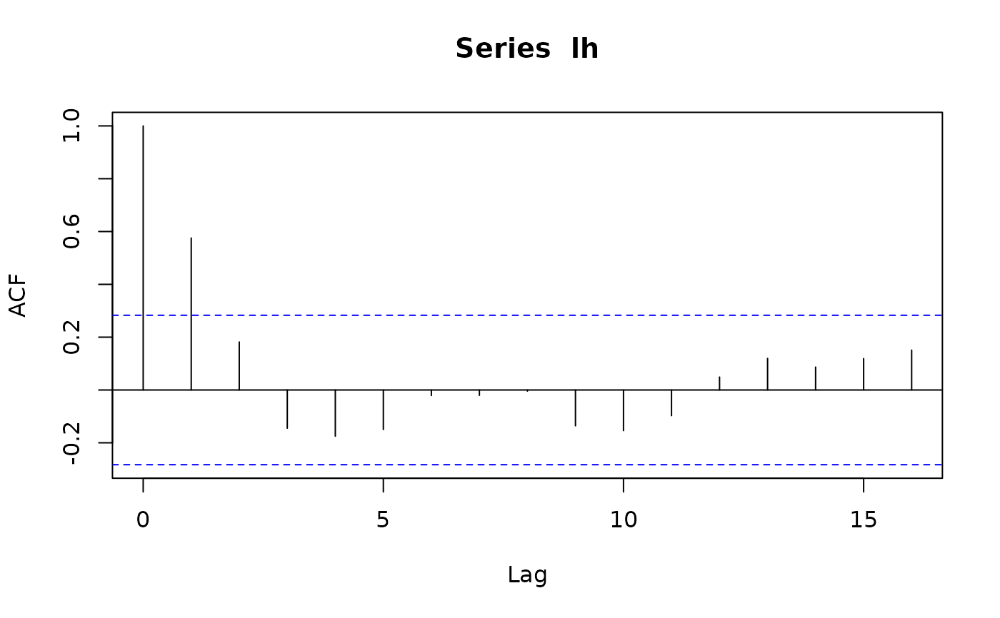
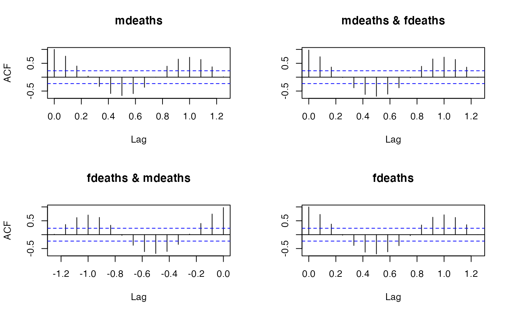

acf2Lagged.RdConvert "acf" objects to "Lagged" objects.
acf2Lagged(x)an object from "S3" class "acf", typically obtained from
acf() and related functions.
acf2Lagged() converts objects produced by acf() and
friends to suitable "Lagged" objects.
Partial autocorrelations obtained from acf() do not contain
value for lag zero. acf2Lagged() puts the number 1 at lag zero
in the univariate case and a matrix of NA's in the multivariate case.
an object from class "Lagged1d" (univariate case) or "Lagged3d" (multivariate case)
## using examples from help(acf)
lh_acf <- acf2Lagged(acf(lh))

lh_acf[0:5]
#> [1] 1.0000000 0.5755245 0.1818182 -0.1447552 -0.1748252 -0.1496503
acf(lh, plot = FALSE)$acf[1 + 0:5] # same
#> [1] 1.0000000 0.5755245 0.1818182 -0.1447552 -0.1748252 -0.1496503
acf(ts.union(mdeaths, fdeaths))$acf[15,,]
#> [,1] [,2]
#> [1,] 0.3732288 0.3613526
#> [2,] 0.3656260 0.3584216
deaths_mts <- ts.union(mdeaths, fdeaths)
deaths_acf <- acf2Lagged(acf(deaths_mts))

base_acf <- acf(deaths_mts)
## rho_14
deaths_acf[14]
#> , , 1
#>
#> [,1] [,2]
#> [1,] 0.3732288 0.3613526
#> [2,] 0.3656260 0.3584216
#>
base_acf$acf[1 + 14, , ] # same
#> [,1] [,2]
#> [1,] 0.3732288 0.3613526
#> [2,] 0.3656260 0.3584216
## this is different and maybe surprising to some:
base_acf[14]
#>
#> Autocorrelations of series ‘deaths_mts’, by lag
#>
#> , , mdeaths
#>
#> mdeaths fdeaths
#> NA (NA) NA (NA)
#>
#> , , fdeaths
#>
#> mdeaths fdeaths
#> NA (NA) NA (NA)
#>
## (see also examples in \link{Lagged})